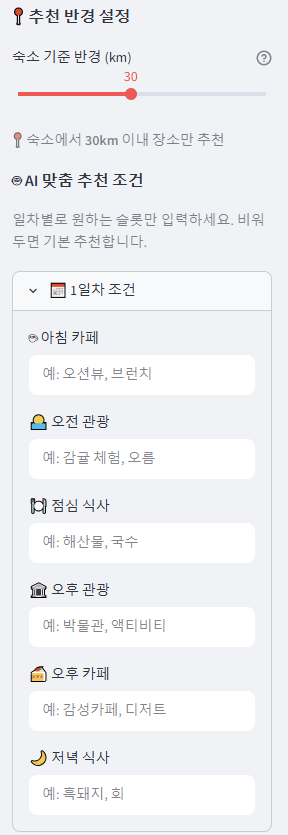
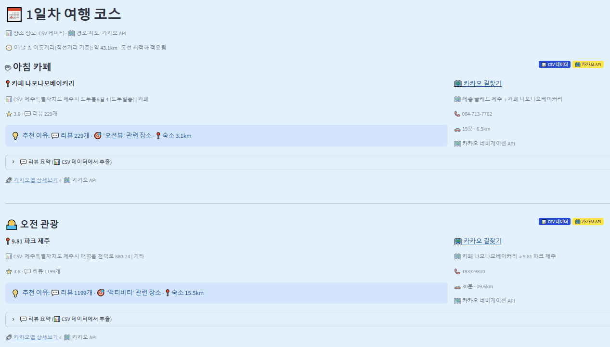
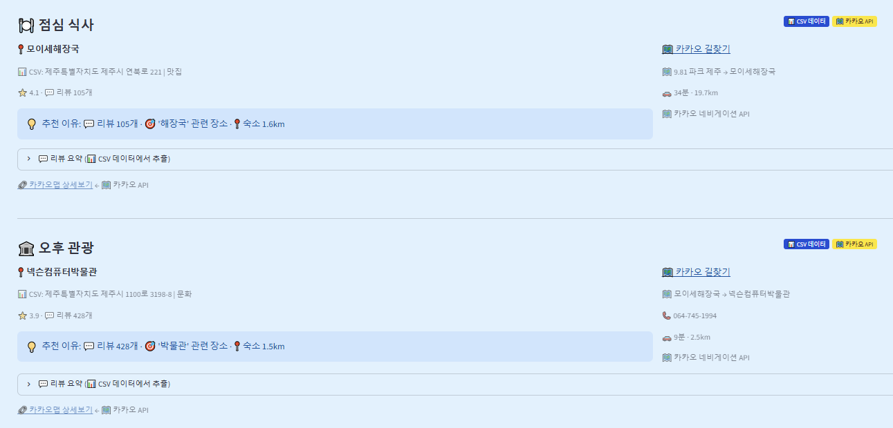
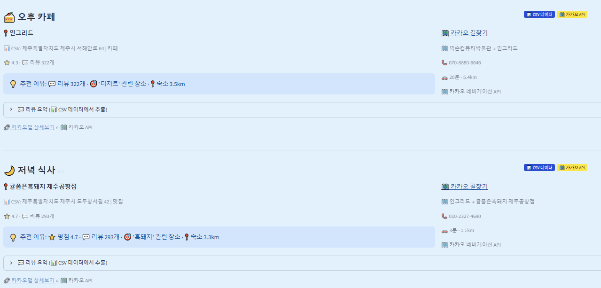
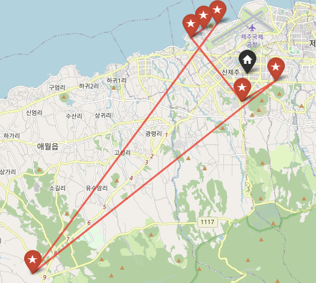
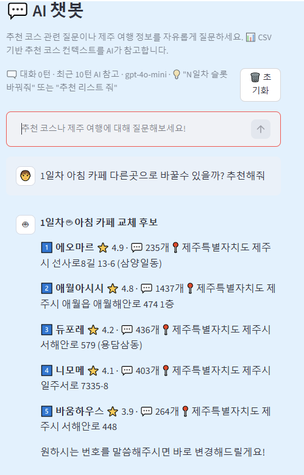

제주 여행 계획이 막막한 사람들을 위한 취향 맞춤 AI 코스 추천 서비스
제주 여행을 계획 중이지만 일정 구성이 번거로운 사람, 혹은 특정 취향에 맞는 코스를 원하는 사람을 위한 서비스입니다. 제주 여행을 준비할 때 관광지를 하나하나 검색해서 일정을 짜야 하는 과정이 반복적이고 시간이 많이 든다는 불편함에서 기획이 시작됐습니다.
| 단계 | 내용 | 장소 수 |
|---|---|---|
| 장소 목록 | 한국관광공사 관광정보 API에서 제주 지역 코드로 관광지, 음식점, 문화시설 등을 받고, 카카오맵 장소 페이지와 연결해 목록을 만든 뒤 여행지가 아닌 곳을 걸러 냄 | 1,394곳에서 1,234곳 |
| 1차 수집 | Selenium으로 카카오맵 장소 페이지마다 평점, 후기 수, 블로그 수, 리뷰(최대 30개)를 수집 | 1,234곳 |
| 장소 확정 | 후기 수 기준으로 표본이 너무 적은 장소를 빼고, 남은 목록을 직접 확인해 확정 | 1,234곳에서 1,054곳 |
| 최종 수집 | 확정한 장소의 리뷰를 다시 수집. 1곳은 3번 재시도했지만 리뷰를 가져오지 못함 | 1,053곳, 리뷰 18,836개 |
리뷰를 수집한 1,053곳의 카테고리(앱 기준): 맛집 350 · 카페 227 · 자연 205 · 문화 192 · 기타 79
수집·정제 노트북은 GitHub의 data_collection 폴더에 실행 순서대로 정리해 두었습니다.
포트폴리오를 정리하면서 수집했던 데이터를 다시 열어 봤습니다(analysis/data_check.py). 아래는 프로젝트 때는 확인하지 못했던 내용입니다.
여행지가 아닌 곳은 장소명에 특정 단어가 들어가면 빼는 방식으로 걸렀습니다. 사찰을 빼려고 '절'을 넣었는데, 이러면 대포주상절리나 절물자연휴양림처럼 이름에 '절'이 들어간 관광지도 같이 빠집니다. 올레길 코스를 빼려고 넣은 '올레'도 서귀포매일올레시장에 걸립니다.
최종 목록을 확인해 보니 이름에 '절'이 들어간 장소는 하나도 없었고, 매일올레시장도 없었습니다. 처음 목록 파일이 남아 있지 않아 이 규칙 때문이라고 확정할 수는 없습니다. 당시에는 지워진 장소 목록을 따로 확인하지 않았습니다.
장소당 리뷰 수를 세어 보니 17~20개가 가장 많았는데, 4개인 곳이 107곳이나 됐습니다. 열어 보니 방문자 리뷰가 아니라 200자에서 잘린 블로그 글 미리보기였고(리뷰 길이 중앙값 200자, 다른 장소는 62자), 협찬 글도 11개 있었습니다.
크롤러가 리뷰를 찾을 때 클래스 이름 하나만 봐서, 방문자 리뷰가 안 뜬 페이지에서는 블로그 미리보기를 대신 가져온 것으로 보입니다. 전체 장소의 10%, 맛집은 350곳 중 57곳(16%)이 방문자 리뷰 대신 블로그 글을 바탕으로 추천되고 있었습니다.
추천은 취향 키워드가 리뷰에 있는 곳만 후보로 남긴 뒤 후보끼리 점수를 비교합니다. 그런데 키워드 점수는 리뷰에 그 단어가 한 번이라도 나오면 똑같이 20점이라, 후보 안에서는 모두 같은 점수를 받았고 순위는 평점과 후기 수로만 갈렸습니다. '산책'을 넣으면 리뷰 17개 중 1개에만 '산책'이 나온 새별오름과 24개 중 9개에 나온 한라수목원이 같은 취급을 받았습니다.
그래서 키워드가 나온 리뷰의 비율로 점수를 주는 방식을 따로 계산해 봤습니다(리뷰가 10개 미만이면 10개로 나눔). 키워드 8개로 비교하니 상위 10곳 중 평균 2~3곳이 바뀌었고, 상위 10곳 리뷰 중 키워드를 언급한 비율은 '산책'이 14%에서 28%로, '바다'가 20%에서 29%로 올랐습니다. 평균 평점은 많아야 0.07점 낮아지는 정도라 이 방식을 앱에 반영했습니다.
계산하다가 '뷰'가 '리뷰'라는 단어에도 걸린다는 것을 알게 됐습니다. 카페 후보 141곳 중 31곳이 이 때문에만 후보에 들어오고 있어서 같이 고쳤습니다.






데이터 범위: 관광공사 API에 없는 장소는 다루지 못했고, 2026년 3~4월에 한 번 수집한 데이터라 그 뒤에 생기거나 문을 닫은 곳은 반영되지 않습니다. 발표 때 강사님께 받은 피드백도 이 부분이었습니다. 장소당 리뷰도 2~44개로 차이가 커서, 리뷰가 적은 곳은 추천 근거가 약합니다.
파일 저장: 카테고리를 직접 고친 파일이 cp949로 저장되면서 리뷰 1,911개의 이모지가 깨졌습니다. 추천에 주는 영향이 작아 앱 데이터는 그대로 뒀습니다.
글자 매칭: 키워드를 글자가 있는지로만 찾기 때문에, "흑돼지와 갈치구이"처럼 한 문장에 같이 나오면 흑돼지 구이집과 구분하지 못합니다.
추천 검증: 점수 가중치는 정해 둔 값이고, 추천받은 코스가 실제로 마음에 들었는지는 사용자 반응을 모으지 않아 확인하지 못했습니다.